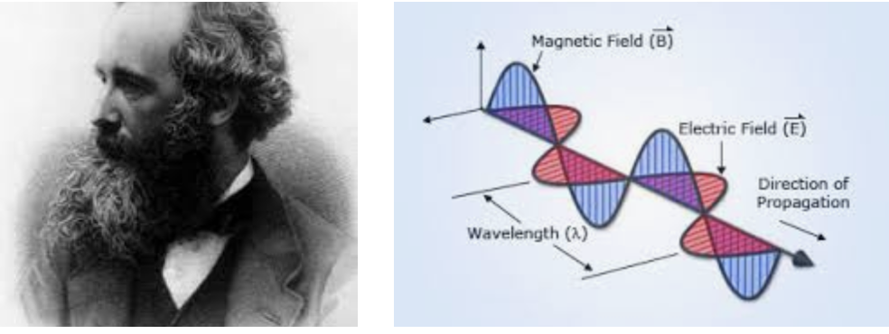
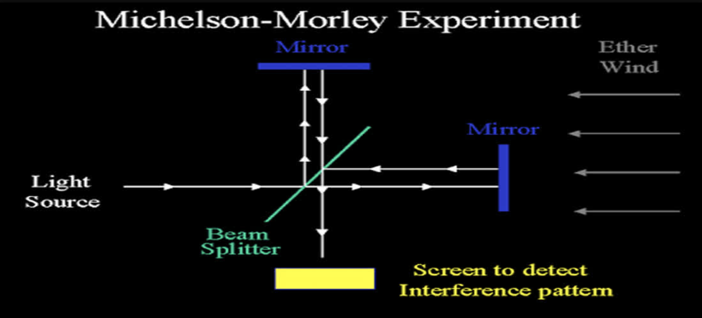

Hello my dear subscribers and welcome to my first blog post. The first topic which I have decided to explore is Einstein's infamous theory of relativity. In this one single theory Einstein gave us everything that a science lover truly loves from warping space to slowing down time, from energy carrying mass to exploring more dimensions and even bending light, this theory probably gave birth to more science fiction stories and mind-bending paradoxes than any other. But before we delve into the details I think it is important for us to understand how exactly this theory came into existence in the first place.
Maxwell's Electromagnetism & The Aether 
This is James Clerk Maxwell, one of the most important physicists of all time. Now he may not be as famous as Einstein but the truth is he got a lot done. His famous equations of electromagnetism proved that light was in fact a combination of two penpendicularly oscillating electric and magnetic fields thus unifying the fields of magnetism, electricity and optics in one single shot! We finally had a theory that was as solid as a rock and all scientists were very happy that all their problems were solved. However

yeah, you see the problem was that Maxwell had calculated the speed of light which he wrote in his papers to be a ratio of two constants. Why is this a problem?
Well you see the problem is that speeds aren't usually constant. Your speed w.r.t you or your friend at home reading this beside you is 0, but w.r.t the helicopter flying in the sky is a pretty high. This concept of velocities getting added or subtracted relative to each observer such that no observer was incorrect about his measurement of space and time was introduced by Galelio and is hence called Galilean Relativity and is probably the most fundamental thing about science. So I guess the real question was:
speed of light= 299 792 458 m / s with respect to whom?????
And the scientists at that time had an answer: the aether or more precisely the luminiferous aether. The aether was described as this invisible fluid sort of stuff which filled all of space. There were no description about what it was made of or anything like that but it was everywhere. Many scientists simply concluded that light moved at 299,792,458 m/s with respect to the aether and depending on how an observer moved in the aether the speed of light as measured by the observer would change. (Spoiler alert:This theory is about to get knocked straight outta the park.
The Michelson-Morley Experiment
Now as you all know the scientists of that time after making up this theory were like:

However as you all know the final jury in any scientific theory is always experiment: if your theory doesn't agree with experiment it doesn't matter how big a crisis you think it is, you're gonna have to solve it! And two young scientists Albert A Michelson and Edward W Morley decided to conduct an experiment to get an understanding of something known as the aether wind. So basically most scientists of the time believed that there existed a relative motion between the aether and the earth because of the earth's rotation. Therefore, Michelson and Morley were conducting an experiment to gain an understanding of the the direction and magnitude of the aether wind.

Now the experiment is kinda hard to explain in layman's language so bear with me
- The experiment consisted of a laser which released a beam of light onto a half-transparent mirror inclined at 45 degrees with the horizontal
- The mirror split the ray into two distinct rays: one travelled parallel to the original direction while other was perpendicular
- Mirrors were placed at equal distance from each mirror which reflected the rays back
- On the way back the semi-transparent mirror refracted the rays onto a sensor
Now the logic behind the experiment was that horizontal ray would get slown down because of the earth's rotation during the first half and then get sped up(it could also have been vice-versa). The vertical one would also get slown down and then sped up but the effect would be much lesser as the direction was perpendicular to earth's rotation. Therefore since distane covered was the same there would be a delay in the time taken which would be measured by the sensor.

By Stigmatella aurantiaca at English Wikipedia, CC BY-SA 3.0, Link
However the results of the experiment were genuinely shocking. As it turns out, the sensor measured no delay at all!The experiment was repeated several times by many scientists and even theories such as aether drag were developped. However all of this was in vain. The Michelson-Morley experiment provided enough evidence that the speed of light was a universal constant and hence paved the way for a young German scientist working in a Swiss patent office to go ahead and change the world.
That's it for today but stay tuned for my next post in which we shall explore the effcts of time-dilation and lenght-contraction. Don't forget to subscribe to my blog and till then